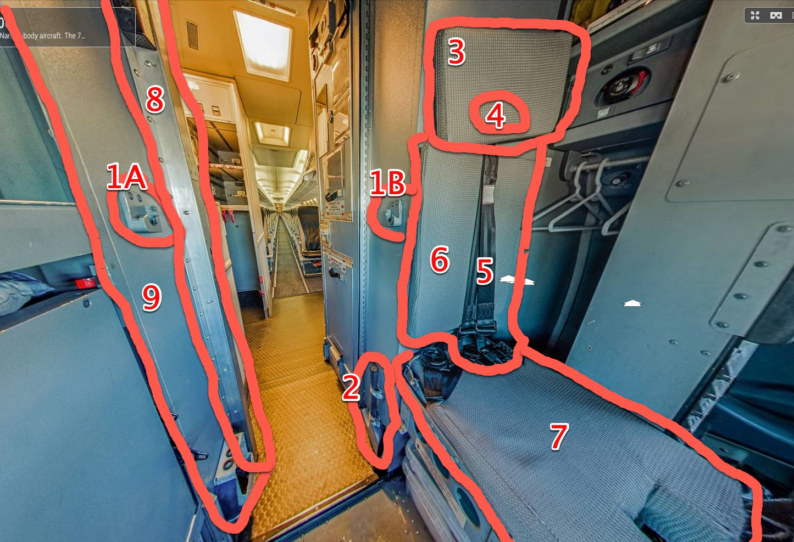
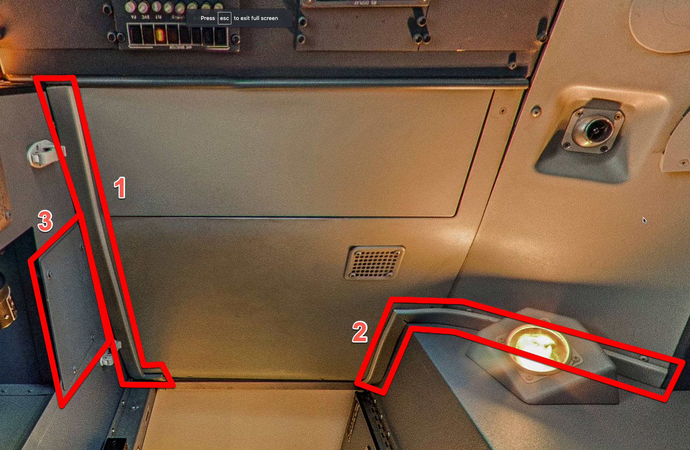
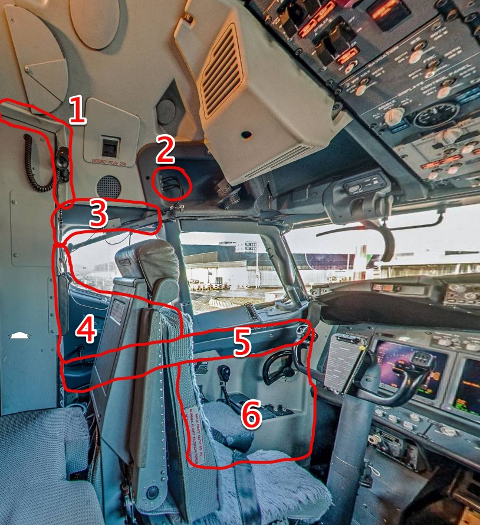
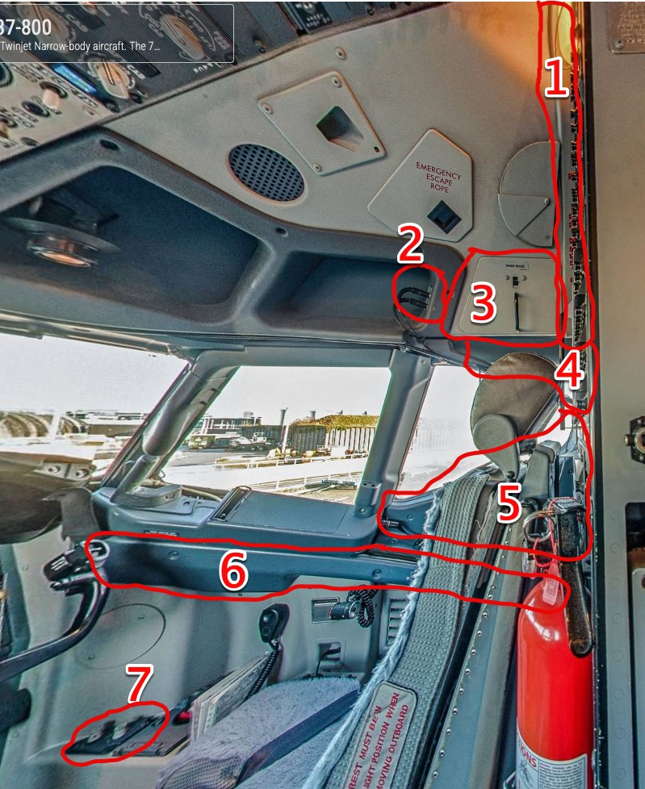
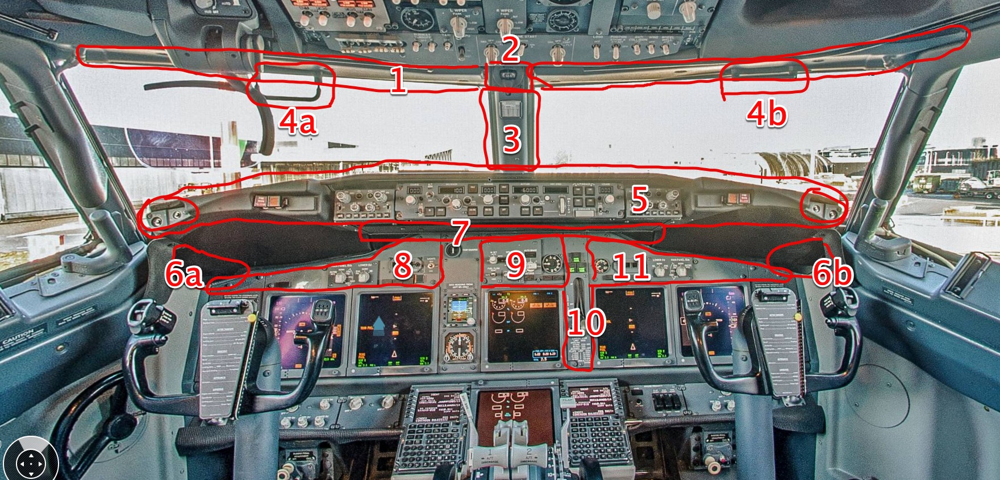

| # | Description | Comments |
|---|---|---|
| 1 | Jumpseat latches & hardware (left & right) | |
| 2 | Crash axe straps/cover | Dont need the crash axe itself |
| 3 | Jumpseat headrest pad | |
| 4 | Jumpseat harness bracket & hardware | Behind the headrest pad. |
| 5 | Upper jumpseat harness | Dont need the lower |
| 6 | Jumpseat back pad | |
| 7 | Jumpseat seat pad | |
| 8 | I got a hold of this but might be interested in another for a static display. | |
| 9 | Entryway wall | |
 | ||
| 1 | Aft liner right rubber trim | |
| 2 | Aft liner left rubber trim | |
| 2 | Breaker cabinet cable cover | |
 | ||
| 1 | Upper liner rubber trim | |
| 2 | Captain eyebrow audio jack plate | |
| 3 | Captain upper #3 window liner | |
| 4 | Captain lower #3 window liner | Sliding window cable if available |
| 5 | Captain #2 window track liner | |
| 6 | Captain lower sidewall liner | Including tiller cover/guide, cup holder and pocket. |
 | ||
| 1 | Upper liner aft rubber trim | |
| 2 | FO eyebrow audio jack plate | |
| 3 | FO upper liner bulb door | |
| 4 | FO upper #3 window liner | |
| 5 | FO lower #3 window liner & cable | |
| 6 | FO #2 window track liner | |
| 7 | FO sidewall map light panel | |
 | ||
| 1 | Eyebrow trim | Looking for the long piece that spans the windows, not the two smaller pieces in front of the overhead. |
| 2 | Compass mount | Not the compass itself |
| 3 | Center pillar liner | |
| 4 | Handles | |
| 5 | Glare shield | Complete (top, bottom, checklist holder, light and clock buttons on each end). If the master caution annunciators are available would like to check on price. |
| 6 | Small end liners under glare shield. | |
| 7 | Long liner under glare shield. | |
| 8 | Upper CAP MIP panel | Optional, curious on price if available. |
| 9 | Autobrake panel | Optional, curious on price if available. |
| 10 | Landing gear panel | Optional, curious on price if available. |
| 11 | Upper FO MIP panel | Optional, curious on price if available. |
 | ||